Heygo のセンサーとアプリが連携して、足元のすべてのターンを読み取り、わかりやすく説明し、次の1本で何を練習するかを伝えます。
データを読み、データを理解し、あなたを理解する。最後はすべて、アプリで見えて、そのまま実践できるものに落とし込みます。
2つのセンサーを左右のブーツの側面にクリップで留め、アプリを開いて Go をタップすれば記録開始。キャリブレーション動作は一切不要で、数ターン滑れば取り付け位置を自動で把握します。
両足の動きを100Hzで記録し続けます。Heygo は1本を区間ごと、ターンごとに分け、カービングかスライドかを判別して、エッジ角、速度、ターン形状を記録します。
各区間に、タイミング・荷重・滑らかさ・類似度の4つの軸で Heygo IQ をつけます。比べる相手はいつも過去の自分。あなたならではの課題を見つけます。
1本滑ってリフトに乗れば、1本ごとのレポートと音声での振り返り。1日の終わりには1日のレポートで、課題はどこか、なぜか、次の1本でどのレッスンを練習するかがわかります。
滑走の各区間に Heygo IQ がつきます。タイミング・荷重・滑らかさ・類似度の4つの軸で構成され、各軸の下にはタップして詳しく見られるアドバンス指標があり、すべてあなたの両足の実際の動きから算出されます。
4つの軸の平均点は126で、総合スコア125とほぼ一致。どの軸が足を引っ張っているか、ひと目でわかります。
スライドでは、ターンとターンの一貫性も総合スコアに含まれます。
カービングではターン形状と負荷をより重視するため、トーサイド・ヒールサイドの類似度は総合スコアに含めず、類似度の軸にだけ反映されます。
タイミング 133 · 切り替えるべきときにエッジを切り替えたか、十分早かったか。
ノーズがフォールラインへ向かう前に、どれだけ早くエッジ切り替えを終えたか。早いほどターン前半が完成し、ターン中のスピードをコントロールしやすくなります。
エッジ切り替え後、エッジ角を速く安定してつくれているか。
エッジ切り替えのとき、前のターンの圧をタイミングよく、スムーズに抜けているか。
荷重 122 · ターン中の圧が安定しているか、十分か。
ターン中にかかる負荷の大きさ。スピードとエッジ角がそろって初めて、負荷が上がります。
ターン中にボードが向きを変える速さが、目指すターン形状に合っているか。
ターンの終わりにフォールラインを横切れているか。ターン全体を描くことで、自然にスピードをコントロールします。
ターン全体で、圧のかけ方と抜き方が連続していて、集中していて、再現できているか。
滑らかさ 138 · 動きがつながっているか、ターンとターンのつなぎがスムーズか。
ターンが丸くふくらんだC字になっているか。まっすぐ突っ込んでから急に振っていないか。
フラット、エッジング、リリースまで、エッジ角の変化がなめらかな曲線になっているか。
連続ターンの時間と振れ幅が均一かどうか。
類似度 111 · トーサイドとヒールサイドが同じようにできているか、各ターンが安定して再現できているか。
トーサイドとヒールサイドのエッジの立て方が近いかどうか。
トーサイドターンとヒールサイドターンの速度が近いかどうか。
トーサイドターンとヒールサイドターンの半径が近いか。ラインが片側に流れていないか。
アプリではトゥサイドターンの類似度とヒールサイドターンの類似度も別に表示し、どちら側が不安定かを見やすくしています。この2つは表示のみで、採点には使われません。
軸内の各指標の配分はどの滑り方でも同じで、総合スコアはカービングかスライドかで別の重み付けに切り替わります。数字はすべて、同じライダーの10月30日の実際の1区間のものです。
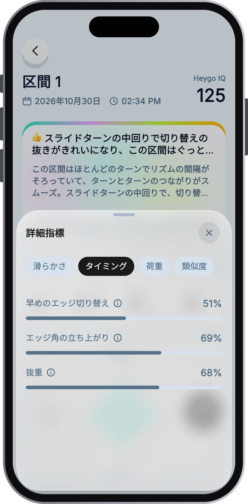
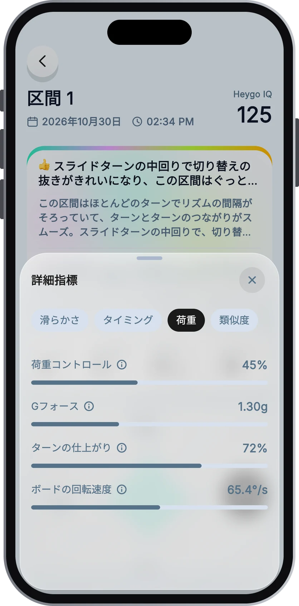
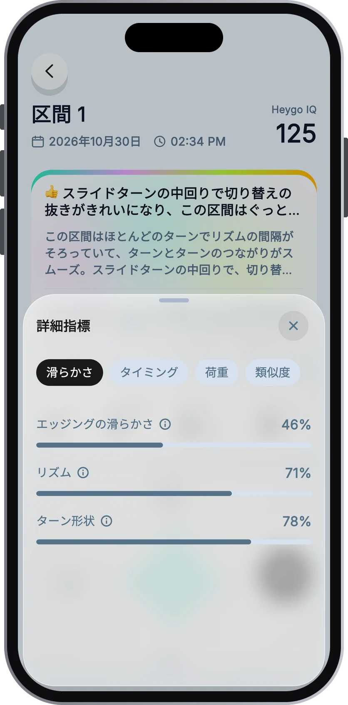
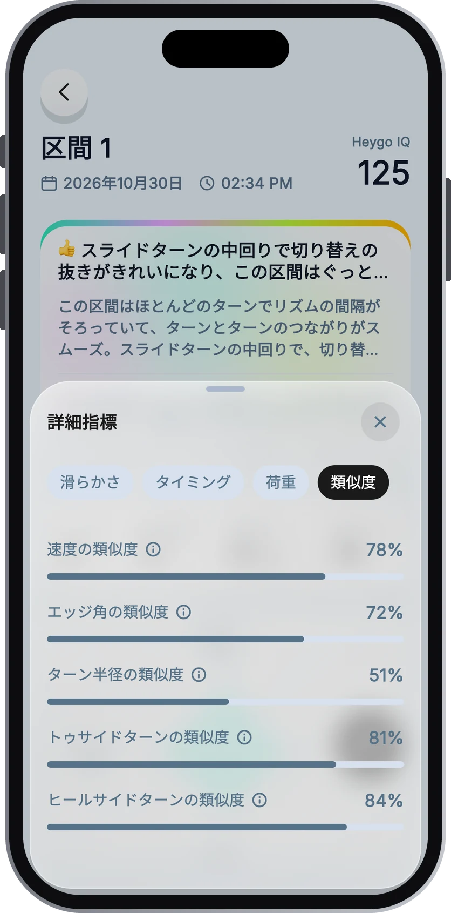
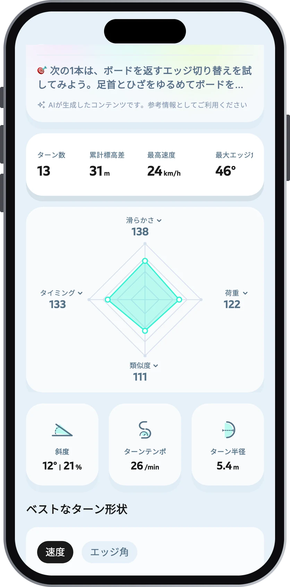
Heygo IQ のほか、1本ごと・区間ごとにこれらの基本データを自動で記録します。手動で開始・終了する必要はありません。
以下はすべて Heygo アプリの実際の画面で、データは同じスノーボーダーの同じ1日のものです。
「11本滑り終えて、スライドは前回の滑走より全体的にいい出来。最後の数本ではさらに調子を一段上げました。」最初のひと言から、今日を前回と比べています。前回どんな滑りだったかを覚えているのです。
Heygo インサイトは今日を4つのステップに分解します。データ（今日はテールの振り出しが19回、多くはヒールサイド）→ 原因（ターンの始めに後ろ足から動き、ノーズがまだ向きをつかめていない）→ スキル（前足から先にエッジ角を変える）→ 練習。
Heygo IQ の割合では、今日と前回の滑走日を並べて表示。より高いスコア帯で滑った時間が増えたことがひと目でわかります。
タイミング・荷重・滑らかさ・類似度の4本の線が1本ごとに変化。6本目の谷とその後の回復がはっきりわかります。
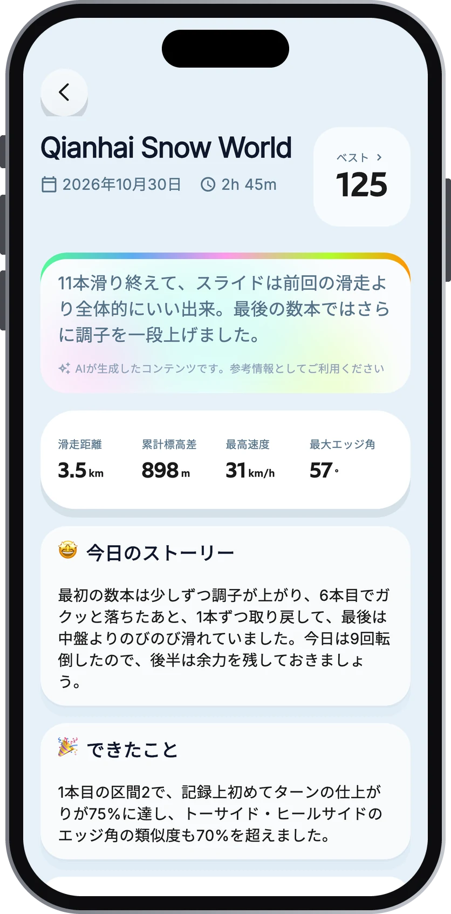
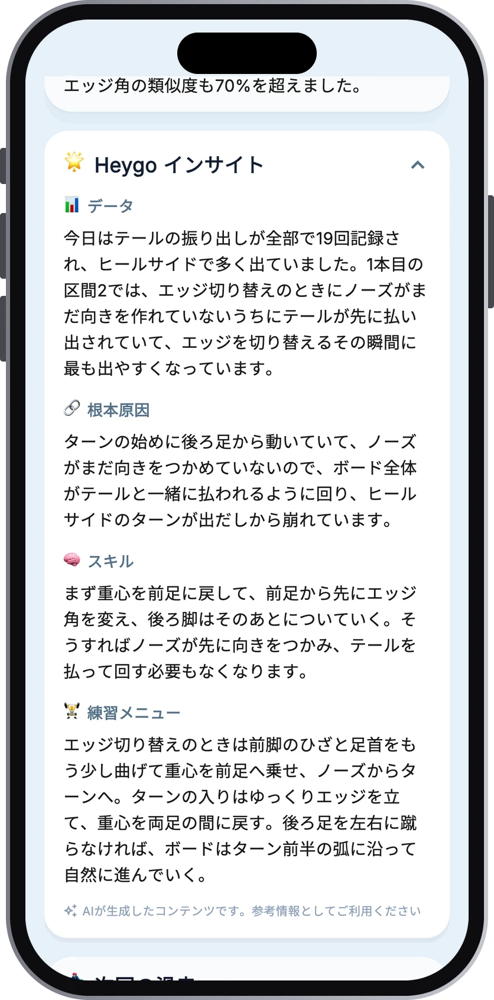
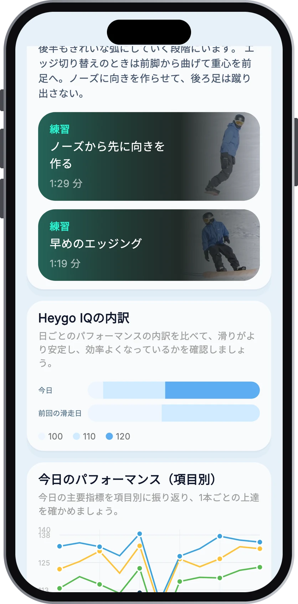
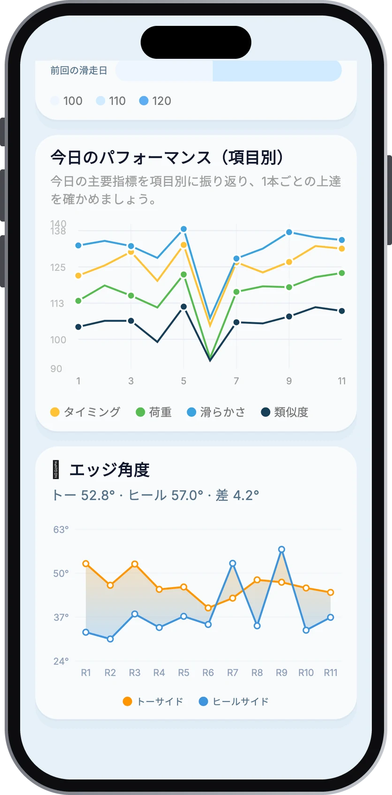
この日の6本目はスコアが100まで落ちました。1本ごとの比較には、ターン形状 −25、リズム −18、抜重 −16、荷重コントロール −14 とそのまま表示されます。
「エッジ切り替えをノーズがほぼ谷を向くまで引っ張っているので、ボードが斜面に沿って加速する時間が長くなり、スピードがどんどんたまっていきます。」原因がどの区間か、トーサイドかヒールサイドかまで特定します。
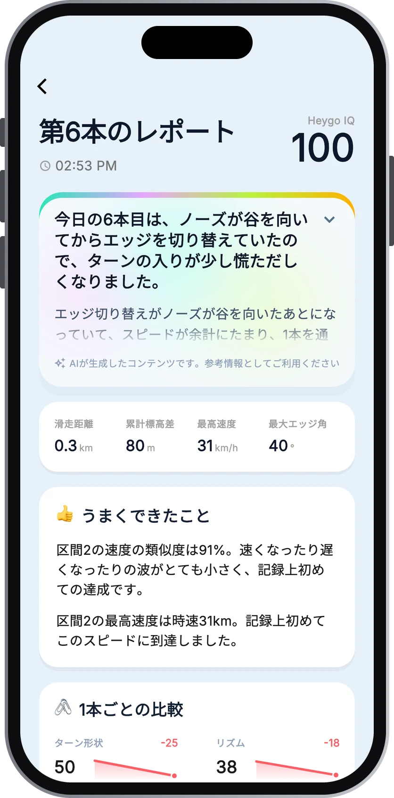
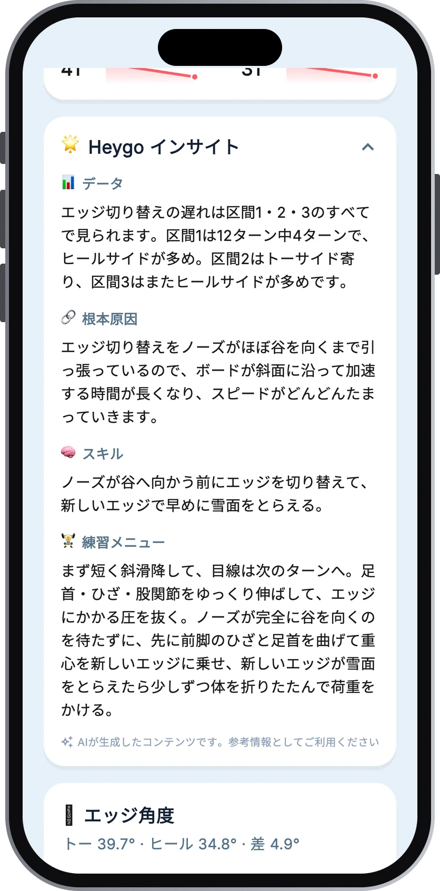
レポートが課題を指摘したら、「次の1本」でどうするかをそのまま示し、対応するレッスン「早めのエッジング」をおすすめします。
どのレッスンにもインストラクター本人によるお手本動画があり、目標・抜重・エッジング・フラットのパートに分かれているので、見たいところへ飛ばして見られます。下にはステップごとのポイントもあるので、その通りにやるだけです。
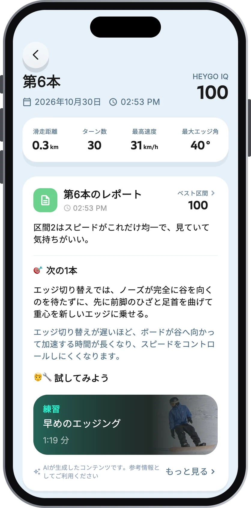
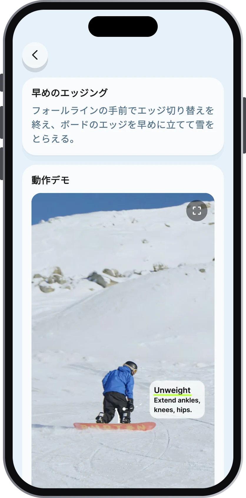
その日のベスト区間、Heygo IQ 125：「この区間はほとんどのターンでリズムの間隔がそろっていて、ターンとターンのつながりがスムーズ。切り替え時の圧の抜きがぐっと安定しました。」
ベストターン形状は実際の軌跡から再現。速度またはエッジ角で色分けを切り替えられ、トーサイドとヒールサイドが半分ずつ表示されます。
13ターンそれぞれの最高速度、最大エッジ角、ターン半径がそろっていて、トーサイドターンとヒールサイドターンはアイコンで区別されます。
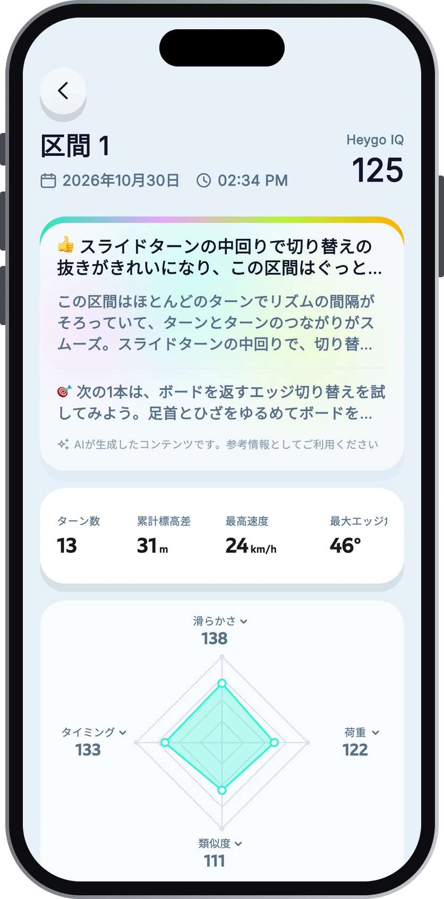
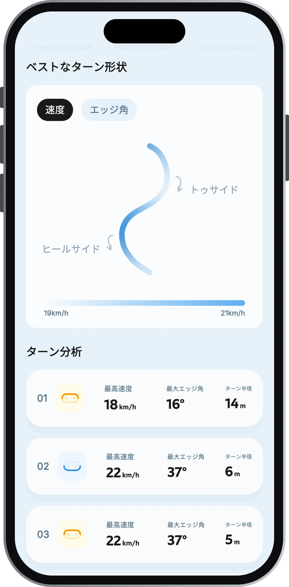
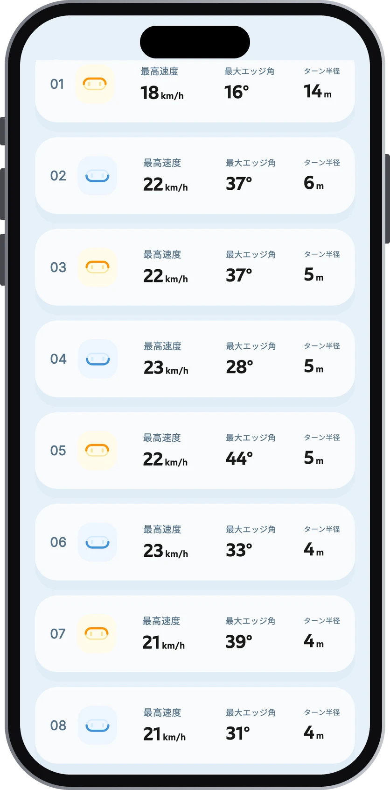
過去の記録を見て課題を1〜2つにまとめ、まずどれを、どう練習するか、うまくできたらどんな感覚かを教えてくれます。以下は実際の会話です。
あなたが今どの段階にいるかを把握し、順番に次のステージを示します。早めのエッジングのあとは体の折りたたみ、その先にやっとカービング。
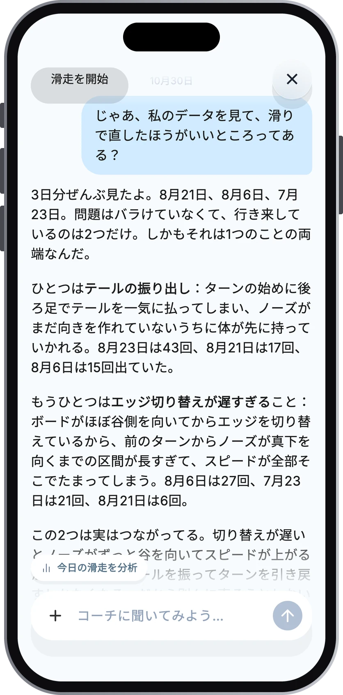
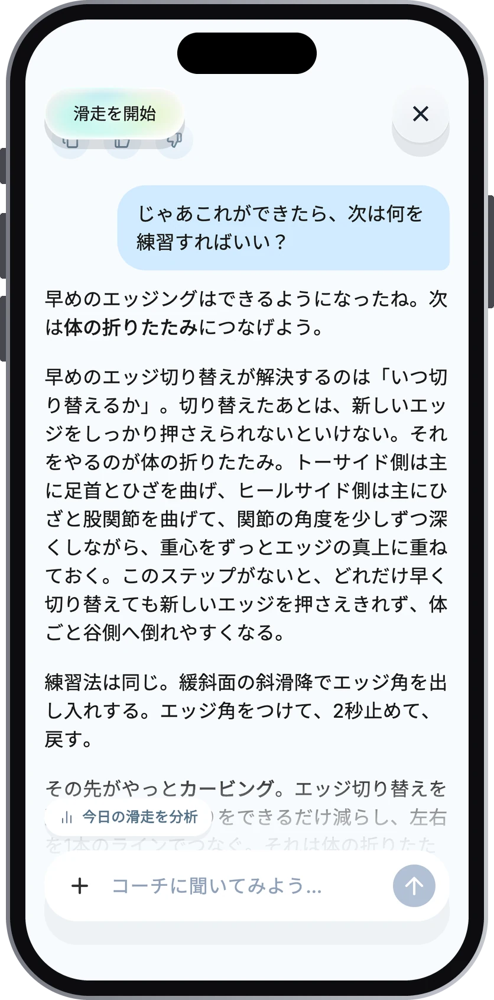
詳細・シンプル・ミュートの3モード。しっかり練習するときは多めに、気楽に滑るときは大事なことだけ伝えます。
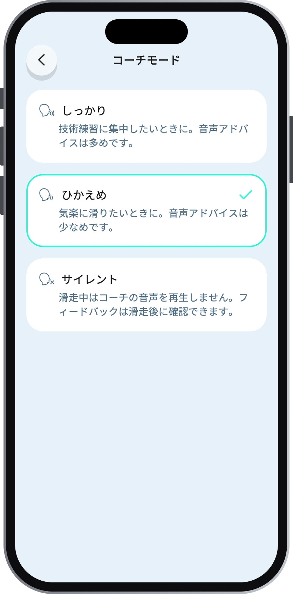
センサーにわかるのは数字だけ。各ステップで、数字を「インストラクターが見てわかるもの」へ一歩ずつ近づけます。各ステップを開いて、Heygo がどうやって一歩ずつあなたを理解していくかを見てみましょう。
内容は Heygo × GLOW 11月1日の公開レッスン資料をもとにまとめたもので、サンプルデータは上と同じライダーのものです。その背景には、200万回以上の実際の滑走データの積み重ねがあります。